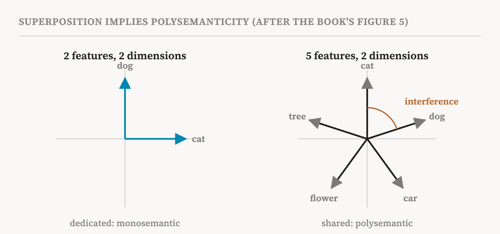
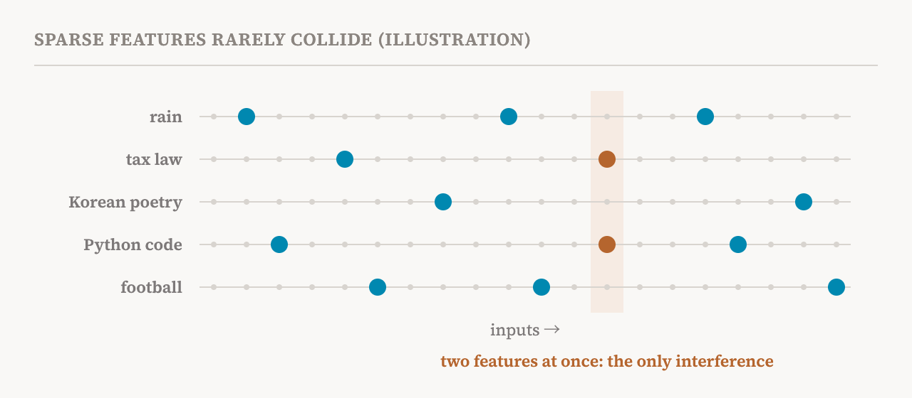

Part 7's hypothesis said that concepts are directions. This part asks how many directions a model can use, and what happens when it needs more than it has room for. It covers section 5.2 of the book (pages 28–30). The hypothesis it describes, superposition, is the usual explanation for the polysemantic neurons of part 5, and it is the reason the tools of the next group of parts exist.
The hypothesis
The superposition hypothesis says that a model's hidden states encode more features than they have dimensions. If a model represents m features in d dimensions, the hypothesis claims that m is much larger than d.
That has two consequences. First, the features cannot all be orthogonal to one another. Two directions are orthogonal when they are at right angles, so that moving along one does not move you at all along the other. A space with d dimensions has room for at most d directions that are all at right angles to each other. With more features than that, some must overlap.
But they can be nearly orthogonal: at angles close to, but not exactly, ninety degrees. Here our everyday intuition, built on two and three dimensions, misleads us. In a space with thousands of dimensions, the number of directions that are all nearly at right angles to each other is vastly larger than the number of dimensions. The book's notebook for this section explains why, using a mathematical result called the Johnson–Lindenstrauss lemma. So a large model has room for a huge number of almost independent directions, as long as it tolerates a little overlap.
Second, superposition implies polysemanticity. If features outnumber dimensions, the model cannot give each feature its own neuron. Features have to share the same dimensions, so a single neuron ends up taking part in encoding several unrelated concepts.

Why sharing could pay
Overlap has a cost. When two features share dimensions, activating one also slightly activates the reading of the other. This is called interference. So why would training ever settle on such an arrangement?
The book's main source here, a 2022 study called "Toy Models of Superposition", gives the standard answer. It trained tiny networks to store more features than they had dimensions and then recover them, and watched when they chose to superpose. The key was sparsity: how rarely each feature is active. Most concepts are absent from most inputs. A text about cooking rarely mentions tax law, and a line of code rarely contains a Korean poem. If two features are seldom active at the same time, the interference between them seldom matters, and a nonlinearity such as ReLU can filter out the small leftover overlap. In that regime, packing many sparse features into a few dimensions is a good trade, and the toy networks made it. When features were active often, they did not.

The companion notebook reproduces this toy model. It trains a small network, then plots how its learned feature directions overlap, which shows directly whether features were given their own dimensions or squeezed together.
The evidence
The book cites two kinds of evidence. First, mechanistic studies have repeatedly found that polysemantic neurons are widespread: individual neurons often activate for several unrelated concepts and are hard to read as standalone units. Second, methods built on the assumption of superposition work. Dictionary-learning methods, chiefly sparse autoencoders, start from the idea that activations are sums of many sparse features, and they recover millions of distinct features from shared activation spaces. Many of the features they find are much more monosemantic than individual neurons, and some have been shown to influence the model's behaviour causally. Together, these findings suggest that more of the meaning in an activation space lies along directions than along the axes of individual neurons.
Still a hypothesis
The book is clear that superposition remains a hypothesis in large language models, not an established fact, and it gives three reasons for caution.
First, polysemantic neurons do not by themselves show that superposition causes them. Second, dictionary-learning methods can recover interpretable features even when there is no superposition, so their success does not prove it is there. Third, a 2024 study showed that polysemanticity can arise even when there are no more features than neurons. In its account, neurons can end up mixing concepts for incidental reasons during training, such as where the training happened to start and the noise along the way, rather than because they are short of room. The book reads this as pointing to other mechanisms, possibly working alongside superposition, by which neurons come to mean several things.
Superposition as a design choice
The section closes with an idea that changes how the problem looks. Superposition is not an unavoidable property of deep neural networks. It happens because ordinary architectures allow it. With no constraints on the architecture or the activations, the training process, gradient descent, is free to exploit the geometry of the activation space and pack far more features than there are neurons.
That suggests a different research direction, which the book calls interpretability by design. Instead of untangling a finished model's superposed activations afterwards, one can design architectures or components that encourage representations whose features are easier to analyse. The book names two points of intervention. One is to impose sparsity on weights or activations, limiting how many neurons in an MLP or attention head can take part for a given input, and so limiting how many units can jointly carry any one feature. An early example is an activation function from 2022 called SoLU, designed to push MLP neurons towards monosemanticity. The other is to change the basic units of analysis, from fixed features in the activations to learnable transformations carried out by weight matrices, which suits some tasks better and removes the pressure to compress representations.
Either way, superposition stops being only a phenomenon to reverse-engineer and becomes a design choice that can be limited from the start. Part 15 covers these methods and what they cost.
| Term | Meaning |
|---|---|
| Superposition | Storing more features than there are dimensions, by letting features share space |
| Orthogonal | At right angles, so that moving along one direction does not move along the other |
| Nearly orthogonal | At angles close to ninety degrees; in high dimensions, far more such directions fit than there are dimensions |
| Interference | The small, unwanted activation one feature causes in the reading of another that overlaps it |
| Sparsity | How rarely a feature is active; most features are absent from most inputs |
| Toy model | A tiny network trained on a simple task so that a phenomenon can be studied in full |
| Dictionary learning | Methods that rewrite activations as sums of many sparse features |
| Gradient descent | The training process that adjusts weights step by step to reduce error |
| Interpretability by design | Building models whose features are easier to read, instead of untangling them afterwards |
| SoLU | An activation function designed to make MLP neurons more monosemantic |
Next, part 9 covers the last two hypotheses: that a model can explain its own insides, and that different models learn the same things.